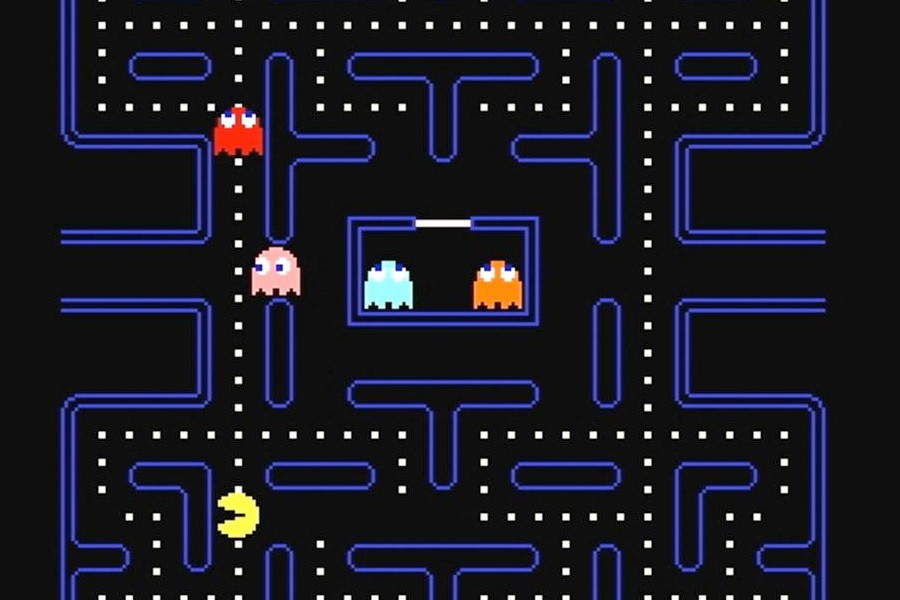

Projects > Pac-Man Artificial Intelligence
Pac-Man Artificial Intelligence
February 2021 - March 2021

Description
The goal of this project was to develop a game-playing AI agent
for Pac-Man using object oriented programming in Python.
Throughout the course of the project, I developed algorithms
for depth first search (DFS), breadth first search (BFS),
and A* search with a custom-built admissible heuristic function.
In order for Pac-Man to play well against multiple
ghosts simultaneously, I also implemented multi-agent
adverserial search algorithms with a custom evaluation function.
Finally, I created a learning Pac-Man agent that leverages
Q-Learning during a training phase to make more optimal
decisions during the actual gameplay. Since this project was
completed as part of my Duke coursework, the code cannot be
publicly accessible, but can be provided on request.